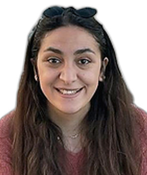

Profil
Aynur Quliyeva 2024-cü ilin yanvarından Tarbesdə UTTOP / ENIT-də dosentdir. 2016–2019-cu illərdə Orlean Universitetində materiallar kimyası üzrə PhD, 2015–2016-cı illərdə Grenoble Alpes Universitetində qabaqcıl texnologiyalar üçün polimerlər üzrə Master 2, 2010–2014-cü illərdə Bakı Dövlət Universitetində kimya üzrə bakalavr dərəcəsi alıb. Kolmarda Lonza Capsugel-də alim, Parisdə PIMM, ENSAM-da elmi mühəndis və Delaver Universitetində postdoktorant olub. 8 dərc olunmuş məqalə göstərilir.
İş təcrübəsi
UTTOP / ENIT, Tarbes, Fransa
yanvar 2024–hazırdaDosent
Capsugel, Lonza, Kolmar, Fransa
October 2022–December 2023Alim
- Tədqiqat və işlənmə, bərk kapsullar
PIMM, ENSAM, Paris, Fransa
June 2021–October 2022Elmi mühəndis
Delaver Universiteti, Nyuark, Delaver, Amerika Birləşmiş Ştatları. Elmi rəhbər: Thomas H. Epps III
November 2019–June 2021Postdoktorant
Təhsil
PhD
2016–2019Materiallar kimyası. Fransa Ali Təhsil və Elmi Tədqiqat Nazirliyinin maliyyəsi. Elmi rəhbərlər: Marylène Vayer və Christophe Sinturel
Orlean Universiteti, ICMN-CNRS, Orlean, Fransa
Master 2
2015–2016Qabaqcıl texnologiyalar üçün polimerlər. Azərbaycan hökuməti təqaüdü
Grenoble Alpes Universiteti, Fransa
Master 1
2014–2015Kimya və həyat elmləri. Campus France təqaüdü
Jozef Furye Universiteti, Grenoble, Fransa
BSc
2010–2014Kimya. Azərbaycan hökuməti təqaüdü
Bakı Dövlət Universiteti, Bakı, Azərbaycan
Tədris
- 2024–hazırda — Kimya; polimerlərə giriş; termodinamika; polimerlərin quruluş-xassə əlaqələri. İldə 192 saat — Bakalavr və magistr, mühəndislər — UTTOP / ENIT
- 2016–2019 — Qeyri-üzvi və ümumi kimya praktikaları. İldə 64 saat. EDIFICE, 3 il ərzində 5 orta məktəb şagirdi — Bakalavrın ikinci ili — Orlean Universiteti, Fransa
Elmi rəhbərlik
- Doktorantlar və postdoktorantlar — UTTOP, 2024-cü ildən. Saylar verilmir
- Magistrantlar — 3 — Dayanıqlı hidrofloil layihəsi üçün material seçimi
- Bakalavr tələbələri — 3 — Dəniz tullantılarının təkrar emalı, beş ay
Elmi göstəricilər
- Dərc olunmuş məqalələr — 8 — Özü tərəfindən
- Şifahi məruzələr, onlardan 3-ü beynəlxalq — 6 — Özü tərəfindən
- Poster məruzələr, onlardan 2-si beynəlxalq — 3 — Özü tərəfindən
Nəşrlər
Rəylənmiş (peer-reviewed) jurnal məqalələri
1. Guliyeva, A.; Pung, H.; Tencé-Girault, S.; Rébillat, M.; Serghei, A.; Gervais, M.; Sollogoub, C.; Roland, S. Improvement of the self-assembly of low-χ ABA triblock copolymers with the addition of an ionic liquid. Polymer International, 2023, 72, 356–365. https://doi.org/10.1002/pi.6476.
2. Taggart, G. A.; Guliyeva, A.; Kim, K.; Pochan, D. J.; Epps, T. H., III; Bloch, E. D. Monitoring the solution persistence of porous coordination cages with diffusion NMR spectroscopy and cryogenic transmission electron microscopy. Journal of Physical Chemistry C, 2023, 127(5), 2379–2386. Equal contribution. https://doi.org/10.1021/acs.jpcc.2c07644.
3. Gottlieb, E. R.; Guliyeva, A.; Epps, T. H., III. From lab to fab: enabling enhanced control of block polymer thin-film nanostructures. ACS Applied Polymer Materials, 2021, 3(9), 4288–4303. Equal contribution. https://doi.org/10.1021/acsapm.1c00680.
4. Vayer, M.; Guliyeva, A.; Warmont, F.; Takano, A.; Matsushita, Y.; Sinturel, C. Transition between tetragonal and hexagonal pattern in binary blends of ABC block copolymers with different chain lengths. European Polymer Journal, 2020, 138, 109986. https://doi.org/10.1016/j.eurpolymj.2020.109986.
5. Guliyeva, A.; Vayer, M.; Warmont, F.; Takano, A.; Matsushita, Y.; Sinturel, C. Transition pathway between gyroid and cylindrical morphology in linear triblock terpolymer thin films. Macromolecules, 2019, 52, 6641–6648. https://doi.org/10.1021/acs.macromol.9b01263.
6. Myllymäki, T. T. T.; Guliyeva, A.; Korpi, A.; Kostiainen, M. A.; Hynninen, V.; Nonappa; Rannou, P.; Ikkala, O.; Halila, S. Lyotropic liquid crystals and linear supramolecular polymers of end-functionalized oligosaccharides. Chemical Communications, 2019, 55, 11739–11742. https://doi.org/10.1039/c9cc04715h.
7. Guliyeva, A.; Vayer, M.; Warmont, F.; Faugère, M. P.; Andreazza, P.; Takano, A.; Matsushita, Y.; Sinturel, C. Thin films with perpendicular tetragonally packed rectangular rods obtained from blends of linear ABC block terpolymers. ACS Macro Letters, 2018, 7, 789–794. https://doi.org/10.1021/acsmacrolett.8b00272.
8. Racine, L.; Guliyeva, A.; Wang, I.; Larreta-Garde, V.; Auzély-Velty, R.; Texier, I. Time-controllable lipophilic-drug release system designed by loading lipid nanoparticles into polysaccharide hydrogels. Macromolecular Bioscience, 2017, 1700045. https://doi.org/10.1002/mabi.201700045.
Dəvətli məruzələr və konfranslarda iştirak
- 1–4 July 2024 — IUPAC Macro 2024, Uorvik, İngiltərə — Poster — Structure-property relationship of nanostructured functionally graded epoxy adhesives
- 27 June–1 July 2022 — EPF, Praqa, Çexiya — Şifahi — Nanostructured actuators based on block copolymers with ionic liquids
- 13–16 June 2022 — BPC 2022, Bordo, Fransa — Şifahi — Rapid self-assembly of block copolymers with ionic liquids
- 9–14 June 2019 — EPF, Krit, Yunanıstan — Şifahi — From cylinders to rectangular rods in thin films of PI-b-PS-b-P2VP
- 18–20 June 2018 — EMRS yaz iclası, Strasburq, Fransa — Poster — Selective domains identification in thin films of ABC block terpolymers: a case study of PI-b-PS-b-P2VP
- 24–25 May 2018 — GFP Grand Ouest, Le-Man, Fransa — Şifahi — Nanostructured surfaces obtained from ABC block terpolymer in thin films
- 20 April 2018 — Journées Jeunes Chercheurs, Orlean, Fransa — Şifahi — Nanostructuration de films minces à base de PI-b-PS-b-P2VP
- 20–23 November 2017 — JNTE 2017, Orlean, Fransa — Poster — Nanostructured surfaces using triblock polymer self-assembly
- 1–6 October 2017 — JEPO 45, Qravelin, Fransa — Şifahi — Archimedean nanostructuration of thin films based on linear PI-b-PS-b-P2VP
- October 2016 — Elm festivalı, Orlean, Fransa — Poster — Lotus effect and superhydrophobicity